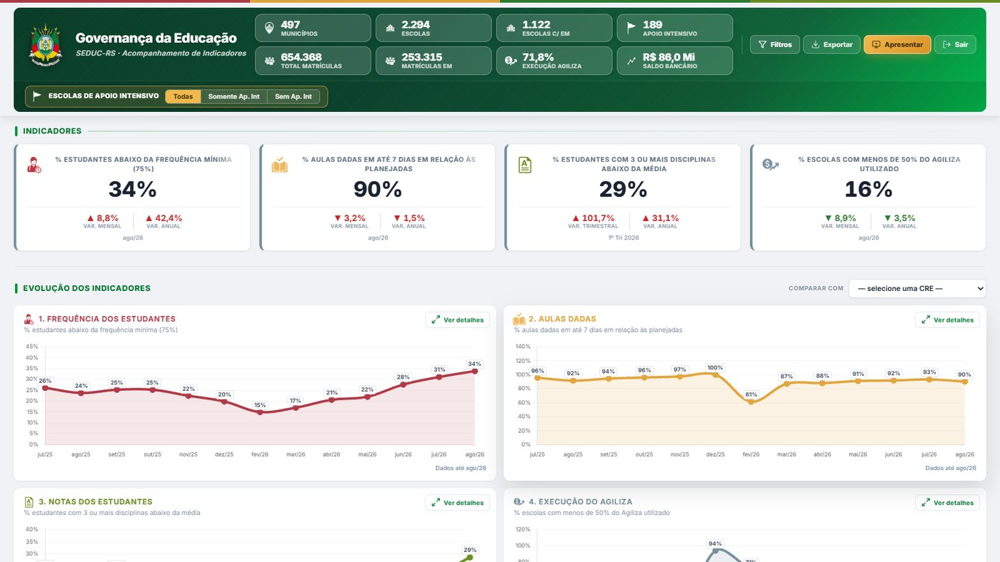
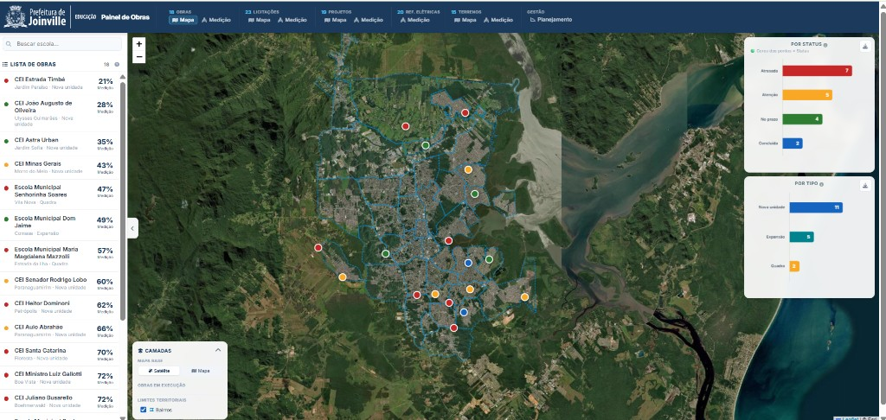
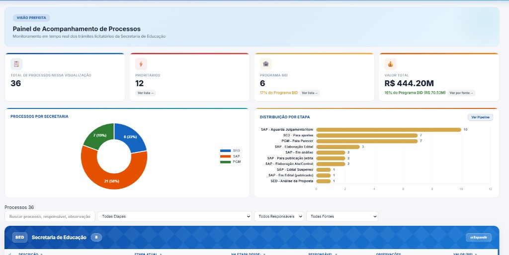
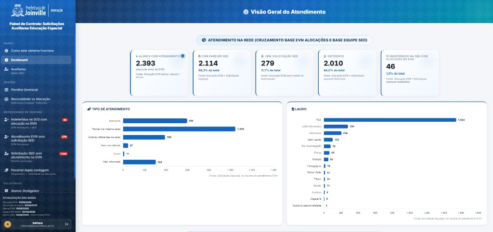

Painel de Indicadores Educacionais — SEDUC-RS
Dados abertos da rede estadual: microdados do INEP em mapas e gráficos para gestores, escolas e o público.

Painel de Governança da Educação — SEDUC-RS
Painel mensal para o Governador: frequência, aulas dadas, notas e execução do Agiliza.

Painel de Indicadores Educacionais — IDEB & Censo
Comparações de IDEB, SAEB e aprovação de Sergipe frente ao Nordeste e ao Brasil.

Gestão de fármacos em São Luís — ciência de dados e território
TCC com mapa Folium, Censo IBGE e 23 mil registros administrativos da rede municipal.

Painel de Obras, Licitações e Terrenos
Sistema territorial da infraestrutura escolar: Leaflet, bairros oficiais da PMJ e pins de obras, licitações e terrenos.

Painel de Dados Abertos — Educação Joinville
Plataforma pública com demografia IBGE, indicadores do INEP e mapa por escola.

Plataforma de Indicadores de Risco Educacional
Risco multidimensional para mais de 200 escolas da rede estadual de Sergipe.

Painel de Monitoramento de Estudantes Imigrantes
Mapa de mais de 3.900 alunos imigrantes de 47 nacionalidades em 170 escolas.

Apoio à gestão do contrato BID e Plano de Expansão
Operação BR-L1665: evidência territorial, monitoramento de migrantes e materiais ao TCE.

Sistema de Acompanhamento de Dados GA/SE
Movimentação, reprovação e frequência da rede estadual sergipana.

Sistema de Gestão de Avaliações Diagnósticas
Logística e resultados das avaliações diagnósticas em cerca de 201 escolas e 10 DREs.

Sistema de Monitoramento Temporal de Risco
Série temporal do risco de reprovação na rede estadual de Sergipe.

Sistema de Priorização de Escolas para o SAEB
Classificação multicritério das escolas com maior necessidade de apoio ao SAEB.

Sistema de Monitoramento Estratégico SED Joinville
Metas, OKRs e 77 indicadores do PEI 2025–2029.

Força Tarefa da Educação — painel da Prefeita
Monitoramento de processos licitatórios e aquisições, inclusive itens do programa BID.

Monitoramento de solicitações de auxiliares pedagógicos
Cruza ~3,9 mil processos SED com alocação EVN e RH em 166 unidades.

Painel de Recomposição de Aprendizagens
Acompanhamento da participação e do progresso no programa de recomposição.